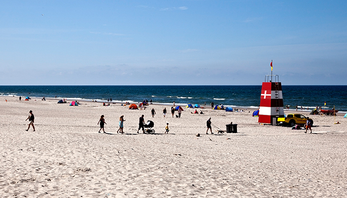

Vrøgum By - Byen ved skoven
Vrøgum er en hyggelig lille landsby i Sydvestjylland, ikke langt fra vestkysten. Vrøgum ligger i udkandten af en stor skov, hvilket er grunden til byen er kendt som "Byen ved skoven". Det betyder at de fleste boliger i Vrøgum granser op til skoven, hvilket gør at de fleste indbygger kan gå ud i deres baghave og praktisk talt være i skoven.
Vrøgum Bed and Breakfast
Cirka 10 kilometer fra Vrøgum Bed & Breakfast ligger vestkysten og den pragtfulde strand. Vestkysten tilbyder frisk vind og en stor åben strand, samt mange klitter at begå sig på, og udfordre sig selv.
